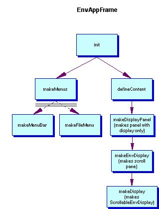
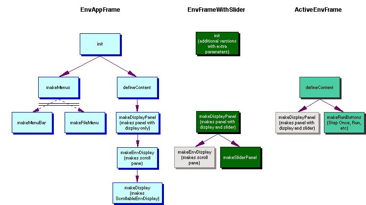

This document is in three parts, organized around the following questions:
There are many introductory programming assignments that involve objects in a two-dimensional data structure. They include games, like tic-tac-toe, checkers, and chess; maze programs; simulations, like the Game of Life[citation?] or the AP® Marine Biology Simulation (MBS) case study[citation]; and simpler programs that use a grid as graph paper for drawing histograms or bit-mapped drawings. These projects lend themselves to graphical representations, but the overhead involved in implementing graphical user interfaces for such assignments, especially interfaces that support user interaction, is non-trivial. The Grid Package provides a set of simple Java classes for modeling objects in a two-dimensional grid, and provides a library of other classes that make it easy to create graphical user interfaces to display and interact with such models.
The Grid Package was inspired by, and evolved from, the AP® Marine
Biology Simulation (MBS) case study.† The MBS case study
introduced a two-dimensional data structure called
an Environment,
which represents the marine environment (lake, bay, or pond) for fish
in
a simulation. The Grid Package introduces a similarGrid data
structure that models a two-dimensional
grid made up of rows and columns and a GridObject class
that represents objects in a grid. Each cell in a grid may be
empty or may contain one GridObject object. A GridObject object
keeps track of its own row/column location in the grid and provides methods
for checking and changing an object's location. Subclasses of the
GridObject class represent different kinds of objects
that can be placed in a grid, each of which may have different behavior. The
diagram below shows several different kinds of grid objects in a grid. (Programmers
familiar with the MBS case study may be interested in reading a summary
of the differences between the MBS Environment/Locatable pair
and the Grid Package
Grid/GridObject pair. [not
written yet!])
Grid grid = new BoundedGrid(3, 3);
grid.add(new TextCell("A"), new Location(0, 0));
grid.add(new ColorBlock(Color.RED), new Location(2, 2)); |
[Figure 1: Need illustration] |
The Grid Package supports five basic types of graphical user interfaces for applications that use grid objects. An application might have:
The heart of any graphical user interface for a grid-based application is
the display of the grid contents. The Grid Package provides a ScrollableGridDisplay class
that knows how to display a grid. The application, though, needs to specify
how to display the individual objects in the grid. (The procedure for
doing this is described below in the Displaying objects
in a grid section.) Several display classes, such as ColorBlockDisplay,
TextCellDisplay, and DefaultDisplay (displays
a question mark), are provided in the Grid Package. Furthermore, there
are several classes for displaying images, such as ScaledImageDisplay, that
provide an easy way to display other kinds of grid objects without writing
graphics code.
[Figures 2a, 2b, 2c, 2d: Need 4 pictures: grid as illustration (display only), grid animation (display with slider), grid with control buttons, stepped appl with control buttons]
The components for creating grid applications using the Grid Package
class library are provided in three Java packages. The classes for modeling
a grid and its contents are in the edu.kzoo.grid package. The
classes for displaying the contents of a grid are in the edu.kzoo.grid.display package. The
classes for creating a graphical user interface for a grid application are
in the edu.kzoo.grid.gui package. In addition, there is
a separate package, edu.kzoo.grid.gui.nuggets, that contains a
handful of small, ready-to-use GUI components, such as MinimalFileMenu, NewBoundedGridButton,
ClearGridButton, BGColorChooser, and so on.
The most important classes in the Grid Package class library are the Grid class
(and its subclasses), which models a two-dimensional grid made up of rows and
columns, and the GridObject class (and its subclasses),
which represents objects in a grid.The Grid class is an
abstract class and so cannot be instantiated. Subclasses
of the Grid class may represent a grid various ways,
including as a two-dimensional data structure that keeps track of
the contents
of each cell
in
the grid, as a bounded or unbounded ArrayList of
grid objects, or as a map of locations and objects at those locations. The
Grid Package includes a BoundedGrid class that
uses a two-dimensional array, an ArrayListGrid.Bounded class
that keeps track of the number of rows and columns in the grid and contains
the grid objects
in an ArrayList, and an ArrayListGrid.Unbounded class
that uses an ArrayList to store the grid objects in a
grid without defined boundaries. BoundedGrid and
ArrayListGrid.Bounded objects are constructed with a specific
number of rows (R) and columns
(C);
the valid locations in the grid range from (0, 0) to (R-1,
C-1). An ArrayListGrid.Unbounded object does
not have a specified number of rows or columns, and all locations are valid,
including locations
with negative row or column numbers. (Rows and columns in any Grid are
of type int, so the constraints on locations in an ArrayListGrid.Unbounded are
those imposed by the int type.)
The ArrayListGrid.Bounded and
ArrayListGrid.Unbounded representations are possible because
all GridObject objects
keep track of their own location, an object of the Location class.
(The Location‡ class represents a row,
column pair.) The
Grid Package provides two sample GridObject subclasses, ColorBlock and TextCell.
Applications may create others. For some GridObject subclasses
it may make sense to keep track of which direction the object is facing
(e.g., north,
south,
east, west); the Direction‡ class supports
this. Figure 1 above illustrates how to create a bounded grid containing
two grid objects, a color block and a text cell. Figure 2 illustrates
the inheritance and component relationships among the key classes for modeling
objects in a grid.
Grid ----- contains ------> GridObject < ------ has-a ----- Location
/ \ / \
/ is-a \ / is-a \
/ \ / \
BoundedGrid ArrayListGrid.Bounded ColorBlock TextCell
These classes that model a grid and its contents are in the edu.kzoo.grid package.
[Provide link to page with more complete descriptions,
lists of all methods, and links to javadocs. Only model class not
mentioned so far is the Active class.]
The Grid Package class library provides an interface, GridDisplay,
describing objects that know how to display a grid and its contents. Any
class that implements this interface must implement the showGrid method
that client code (or a graphical user interface) uses to display the grid.
The
main class for displaying a grid and its contents
is the ScrollableGridDisplay class (a display that can
be put in a scroll pane, making it scrollable). It extends the Java Swing
JPanel class, and so can be used as one of the components
of a graphical user interface. The example below shows how an application
can create and display a grid with two color blocks in it; it does
not, however, show how to create a window containing the display. (For
a complete example, see Components for creating graphical user
interfaces or the Example1 class in the ExampleSourceFiles folder.)
// Construct an object to display a grid. Specify how to display
// ColorBlock objects.
GridDisplay display = new ScrollableGridDisplay();
// code to add the display component to a window not shown
DisplayMap.associate("edu.kzoo.grid.ColorBlock", new ColorBlockDisplay());
// Construct a grid in which to draw. Add two color blocks.
Grid grid = new BoundedGrid(5, 5);
display.setGrid(grid);
grid.add(new ColorBlock(Color.RED), new Location(2, 1));
grid.add(new ColorBlock(Color.YELLOW), new Location(4, 3));
// Display the grid.
display.showGrid();
When sent a showGrid message,
a scrollable grid display object displays the grid's background color, calculates
the size of the grid display and the
size of the individual cells within the grid, creates scroll bars if necessary,
and
paints the grid lines. It then goes through the list of objects in the
grid and displays them.
As in the Marine Biology Simulation program,
the Grid Package class library looks in a DisplayMap‡ to
find out how to display the various types of objects in a grid. The DisplayMap is
a table associating GridObject subclasses
with objects that know how to display them, each of which must satisfy the GridObjectDisplay interface. For
any object in the grid, if the DisplayMap contains an entry
corresponding to that object's class, then the associated display object is
used. Otherwise, if there is a display object corresponding
to the grid object's superclass, that display object is used. This
continues up the class hierarchy for the grid object. If
the DisplayMap does not have a display object specified
for any class in the grid object's inheritance hierarchy, the grid display
will use a DefaultDisplay‡ object, which
displays a question mark ('?'). The application
is responsible for establishing the associations between the classes used for
grid objects and the
objects that know how to display them. In the example above,
the statement
DisplayMap.associate("ColorBlock", new ColorBlockDisplay());
specifies that objects of the ColorBlock class should
be displayed using the given ColorBlockDisplay object.
The list below shows the classes provided in the Grid Package class library
that can be used to display objects in a grid. In addition to
the DefaultDisplay class, there are classes to display
ColorBlock and TextCell objects
in a grid, classes to display image files (pictures in GIF and JPEG
format, for example), and abstract classes that can be extended to create new
displays that will be scaled to fit in a cell and rotated, if necessary. (Rotated
displays are useful if the objects in a grid keep track of their direction
as well as their location. ColorObjWithDirection and
RotatedTintedExample in
the ExampleSourceFiles folder provide an example of an object
that keeps track of its direction, displayed by a RotatedTintedImageDisplay object.) More
information on how to create classes for displaying objects in a grid can be
found in Creating
Grid Package Display Classes. [need to write such
a document.]
GridObjectDisplay (interface for display objects
in a DisplayMap)
ScaledDisplay (abstract class that provides methods
for scaling a display)
DefaultDisplay (displays a question mark,
scaled to fit in a cell)
TextCellDisplay (displays text in the
appropriate cell)ColorBlockDisplay (paints the appropriate
cell with the specified color)RotatedDisplay (abstract class that provides
methods for rotating a display)ScaledImageDisplay (displays an image scaled
to fit in the appropriate cell)
RotatedImageDisplay (rotates and displays
an image)TintedImageDisplay (colors and displays
an image)
RotatedTintedImageDisplay (rotates,
colors, and displays an image)[Here's a weak attempt at a diagram:]
Client code -------> ScrollableGridDisplay ----- asks for assoc. ------> DisplayMap
calls \ --> grid object class name
showGrid \ <-- display object for that class
\
\ asks to display grid object
\
GridObjectDisplay
The classes for displaying a grid and its contents are in the edu.kzoo.grid.display package.
The Grid Package class library provides several classes that implement graphical
user interfaces for grid-based applications. These are found in the edu.kzoo.grid.gui package. The
basic GUI class is GridAppFrame. The
simplest type of object of this class merely creates a window containing a ScrollableGridDisplay. Two
steps are necessary: the application must create a GridAppFrame object
and then send it a constructWindowContents message, specifying
a phrase to appear in the title bar, the grid background color, the width and
height of the window,
and the minimum size of an individual grid cell. The last three values
(window width and height and minimum grid cell size) are expressed in pixels.
String TITLE = "Example GUI";
Color BACKGROUND_COLOR = Color.BLUE;
int MAX_WIDTH = 600; // in pixels
int MAX_HEIGHT = 600; // in pixels
int MIN_CELL_SIZE = 10; // in pixels
GridAppFrame gui = new GridAppFrame();
gui.constructWindowContents(TITLE, BACKGROUND_COLOR,
MAX_WIDTH, MAX_HEIGHT, MIN_CELL_SIZE);
The GridAppFrame class itself implements the GridDisplay interface,
with a showGrid method that merely passes the responsibility on
to its ScrollableGridDisplay method. Thus, we can
create a complete application that
displays a grid containing two color blocks simply by adding the following
code.
// Specify how to display color blocks.
DisplayMap.associate("edu.kzoo.grid.ColorBlock", new ColorBlockDisplay());
// Construct a grid in which to draw. Add two color blocks.
Grid grid = new BoundedGrid(5, 5);
gui.setGrid(grid);
grid.add(new ColorBlock(Color.RED), new Location(2, 1));
grid.add(new ColorBlock(Color.YELLOW), new Location(4, 3));
// Display the grid.
gui.showGrid();
Example1 in
the ExampleSourceFiles folder
is very similar to this, but displays several TextCell and
ColorBlock objects
in a bounded grid in a format to suggest a simple, labelled histogram. Example1Alt is
functionally equivalent to Example1,
but uses an alternative form for constructing
objects
in a grid that is also used in the AP® MBS case study.
The GridAppFrame class
has several methods, such as includeMenu and includeSpeedSlider,
for specifying additional features before the constructWindowContents message
is sent. For
example, the following code would create a graphical user interface for an
animation, with a window containing a scrollable grid display, a minimal file menu with a Quit
option only, and a slider bar controlling the speed of the animation (actually the length
of the pause after each display of the grid contents).
// Construct a window to display an animation in a grid.
GridAppFrame gui = new GridAppFrame();
gui.includeMenu(new MinimalFileMenu()); // see note below
gui.includeSpeedSlider(); // optional parameters customize slider range
gui.constructWindowContents(TITLE, BACKGROUND_COLOR,
MAX_WIDTH, MAX_HEIGHT, MIN_CELL_SIZE);
(Note: MinimalFileMenu is in the edu.kzoo.grid.gui.nuggets package.)
An application that fills the grid with color blocks provides a very simple example of an animation. After specifying in the display map how to display color blocks and after constructing a grid, the application displays the initial, empty grid and then fills it with color blocks, redisplaying the grid each time.
gui.showGrid();
for ( int row = 0; row < grid.numRows(); row++ )
{
for ( int col = 0; col < grid.numCols(); col++ )
{
grid.add(new ColorBlock(Color.RED), new Location(row, col));
gui.showGrid();
}
}
Example2 in
the ExampleSourceFiles folder
implements another simple animation using the graphical user interface
above. In the Example2 animation,
a queen moves diagonally
on a
single-colored
chessboard, from one location to the location below it and to the
right. (We could
use
color
blocks
to create
a black-and-white
chessboard,
but unfortunately
we
wouldn't be able to put any chess pieces on it, since we cannot have both
a color block and a chess piece in the same location of a grid.) When
the queen reaches the last row or column, she cycles back tolocation (0,
0). This application
uses a BoundedGrid object to represent the chessboard
and a generic GridObject object,
which merely keeps track of its current location, to represent the queen.
The application "moves" a queen by removing it from the board and
adding a new GridObject instance to the grid at the
new location. It displays the queen graphically using an image of a crown. The
key steps for implementing the animation are:
DisplayMap.associate.A step in this simple example is a move to the cell below and to the right of the current cell. Moving the queen in this case means removing her from her cell and putting a new queen in the next cell.
The Grid Package supports two types of user-driven applications. One
type allows users to control an application through a set of buttons. The
GridAppFrame class provides an includeControlComponent method
for putting buttons and other components in a control panel to the left of
the grid display.
Several
buttons and other simple components are provided in the edu.kzoo.grid.gui.nuggets package.
For example, a NewBoundedGridButton object brings up a
dialog box that prompts the user for the number of rows and columns, and then
creates
a new BoundedGrid object
with the specified dimensions. A ColorChooser component
provides a drop-down menu from which a user can select a color; a BGColorChooser changes
the background color of the
grid based on the current color choice. A ClearGridButton object
removes all objects from the grid. The example below creates a user interface
with components that allow a user to construct a grid, change its background
color, and remove any objects that might be in it.
// Construct a window with a new grid button, a background color
// chooser, and a clear grid button.
boolean ENABLE_WHEN_WAITING = EnabledDisabledStates.NEEDS_APP_WAITING;
boolean NEEDS_GRID = EnabledDisabledStates.NEEDS_GRID_AND_APP_WAITING;
boolean DISPLAY_GRID_AFTER_CLEARING = true;
GridAppFrame gui = new GridAppFrame();
ThreadedControlButton
newGridButton = new NewBoundedGridButton(gui, "New Grid"),
newClearButton = new ClearGridButton(gui, "Empty Grid",
DISPLAY_GRID_AFTER_CLEARING);
ColorChooser bgColorChooser = new BGColorChooser(gui);
gui.includeControlComponent(newGridButton, ENABLE_WHEN_WAITING);
gui.includeControlComponent(bgColorChooser, ENABLE_WHEN_WAITING);
gui.includeControlComponent(newClearButton, NEEDS_GRID);
gui.constructWindowContents(TITLE, bgColorChooser.currentColor(),
MAX_WIDTH, MAX_HEIGHT, MIN_CELL_SIZE);
The includeControlComponent method takes two parameters: the
component itself and an indicator of when the component should be enabled (clickable)
or disabled (grayed-out and not clickable). The EnabledDisabledStates class
defines a set of constants describing a range of enabled/disabled criteria,
including NEEDS_APP_WAITING and NEEDS_GRID_AND_APP_WAITING. The
first of these indicates that the component should be enabled whenever the
application is ready and waiting for user input, as opposed to actively executing
a button
action, for example. The second indicates that the component requires
a defined grid. Thus, the "New Grid" button is enabled when the
user interface is first created but the "Empty Grid" button is not enabled
until after a grid has been created. Both buttons become disabled while
other button actions are being processed.
In addition to using the classes provided in the edu.kzoo.grid.gui.nuggets package,
it is relatively easy to create a new control button. The
abstract
ThreadedControlButton class provides the basic infrastructure
for creating a control button that runs in a separate thread, enabling and
disabling other components appropriately as it runs. It also provides
the option to display the grid after executing the button action. Executing
the button action in a separate thread means that certain other user interface
activities,
such as updates to the display and changes to the slider bar, may happen concurrently
without waiting for the button action to complete. Subclasses of ThreadedControlButton must
define their constructor(s) and implement the abstract act method,
which performs the core button action. The following ThreadedControlButton subclass
resets the graphical user interface by setting the grid back to null and resetting
the speed slider bar back to its initial value. Similarly, one could
create a FillButton subclass whose act method would fill
the grid with color blocks using code similar to that provided above in
the section on
creating animated grid applications.
public class ResetButton extends ThreadedControlButton
{
private boolean DISPLAY_AFTER_RESET = true;
public ResetButton(GridAppFrame gui)
{
super(gui, "Reset", DISPLAY_AFTER_RESET);
}
public void act()
{
getGUI().setGrid(null);
getGUI().resetDelay();
}
}
Example3 in
the ExampleSourceFiles folder uses code similar to that
found in this section to create an application in which users can create
a new grid, set the background and fill colors, fill the grid with color blocks,
clear out the contents of the grid, or reset the user interface as above. Example3 also
includes a MinimalFileMenu and a BasicHelpMenu object that provides information about
the application, such as the author and version.
Example 4, which consists of
three classes: Example4App, Example4GUI,
and Example4AppControl,
provides another example of an application with control buttons. Example
4 provides a "New
Grid" button
and a customized
"Start" control
button
that, in
this
case, moves
a queen
down
the
diagonal of a chessboard 10 times. Thus, apart from its use of control
buttons, this example is functionally similar to Example2. The
more significant difference, though, is in its implementation, which separates
the
graphical user interface from the application control. Example4GUI is
pure interface code, with no knowledge of the application it is running. It
delegates that responsibility to Example4AppControl by
having the "Start" button (another ThreadedControlButton subclass,
although this time implemented as an anonymous inner class) call the control
class's runAnimation method,
which handles moving the queen in the grid. The
user interface class doesn't even know that what kind of grid object it is
dealing with or how to display it; the call to DisplayMap.associate is
in the main method in Example4App along
with one line of code to construct the graphical user interface object. The
usual calls to the include... and constructWindowContents methods
are in the Example4GUI constructor.
The Grid Package
provides a way to automatically generate ThreadedControlButton buttons
from the methods of a class. Consider, for example, a PatternMaker class
that has a set of "drawing" methods, each of which puts a different
pattern of color blocks in the grid. Each drawing method takes a Color object
as a parameter, to indicate the color of the blocks to place, and has a void return
type. To generate a set of buttons corresponding to these drawing methods,
construct a GeneratedButtonList object, passing it a PatternMaker object
to which messages can be sent and an array of arguments to send with each message
(in this case, an array containing only a Color object.) Then
pass the generated list to the includeControlComponents method
(note the plural) in the graphical user interface. The includeControlComponents method
will add each generated button in the list to the control panel in the graphical
user interface. When an automatically-generated button is pressed, it
invokes the corresponding method on the target object (in this case the PatternMaker object),
passing it the argument(s) provided to the GeneratedButtonList object
when it was constructed. It may also redisplay the grid and its contents
after the button action is complete, depending on the value of the last parameter
to the GeneratedButtonList constructor, displayAfterButtonPresses.
Usually the automatically-generated buttons have the same names as their associated
method; a drawBox method will generate a button labeled "drawBox." If
the method name matches the special on...ButtonClick format, though,
the button label will consist of the interior substring; an onDrawCircleButtonClick method
will generate a button labeled "DrawCircle" rather than "onDrawCircleButtonClick." It
is also possible to reset the label on a button using the resetButtonLabel method in GeneratedButtonList.
The Example5App,
Example5AppControl, and
Example5ColorChoiceMenu classes
in
the ExampleSourceFiles folder provide an example of an application,
some of whose control buttons are drawing buttons that were automatically generated
from
methods
in
the Example5AppControl
class. The Example5ColorChoiceMenu class
provides a drop-down menu from which to choose the color of the
color blocks being placed in the grid. When the user selects a different
color the Example5ColorChoiceMenu object
changes the value of the Color object in the array of method
arguments passed to the automatically-generated control buttons.
The control buttons in the preceding section are appropriate for tasks as
units, in which clicking on a button initiates a task that continues until
it is complete. Some applications, though, are better represented as
an ongoing cycle of repeating tasks. For example, a simulation might
consist of a sequence of timesteps. The Grid Package allows users to
control such an application through a choice
of
Initialize, Step,
NSteps,
Run,
and Stop buttons provided by the SteppedGridAppFrame subclass
of GridAppFrame. The set of control buttons
that are visible on any particular SteppedGridAppFrame graphical
user interface depends on the include... messages sent to it before
the application constructs the window contents. Although the SteppedGridAppFrame object
provides the specified control buttons, it does not know what actions the application
should perform in response to them. For this, it requires that the application
define a controller class (a subclass of the abstract SteppedGridAppController class). The SteppedGridAppFrame object
relies on
the controller object to know how to initialize or restart
the
application,
what
actions
to perform
in a single step, and what the criteria are for stopping a running application. The
user-defined controller class implements these behaviors in redefined init, step,
and hasReachedStoppingState methods, respectively. (All SteppedGridAppController subclasses
must implement the step method, but may leave out the init method
if there is no Initialize button or leave out the hasReachedStoppingState method
if there are no set criteria for stopping a running application.)
The following example is a stepped variation of the program
that moves
a queen
down
the
diagonal of a chessboard 10 times. The graphical user interface provides Step
and Restart buttons but relies on the QueenAnimation controller
class to define how a queen moves in each step and how to re-initialize the
board. Although
it would be possible to create a Queen class with a move method,
this application, like the previous examples, uses a generic GridObject instance
to represent a queen, displays it with an image of a crown, and "moves" it
by removing it from the board and adding a new GridObject instance
to the grid at the new location.
Code to create the controller and graphical user interface:boolean DISPLAY_AFTER_EACH_STEP = true; boolean NEEDS_GRID = EnabledDisabledStates.NEEDS_GRID_AND_APP_WAITING; boolean RESTART_INITIALLY_ENABLED = false; boolean DISPLAY_AFTER_RESTART = true; QueenAnimation controller = new QueenAnimation(); SteppedGridAppFrame gui = new SteppedGridAppFrame(controller, DISPLAY_AFTER_EACH_STEP); gui.includeStepOnceButton(); gui.includeSetResetButton("Restart", NEEDS_GRID, RESTART_INITIALLY_ENABLED, DISPLAY_AFTER_RESTART); // include a New Grid button, Step and Run buttons, and a speed slider; // then construct window contents in the usual way DisplayMap.associate("edu.kzoo.grid.GridObject", new ScaledImageDisplay("GoldCrown.gif"));Key code from theQueenAnimationclass:private Location currentQueenLoc; public void init() { // If a queen is already on the board, remove her. // Insert new queen at location (0, 0). getGrid().remove(currentQueenLoc); queenLoc = new Location(0, 0); new GridObject(getGrid(), currentQueenLoc); } public void step() { // Remove queen from current location; insert new queen // to the lower-right or back at location (0, 0). getGrid().remove(currentQueenLoc); int newRowCol = (currentQueenLoc.row() + 1) % getGrid().numRows(); currentQueenLoc = new Location(newRowCol, newRowCol); new GridObject(getGrid(), currentQueenLoc); }
Note that the step method in this example assumes that the grid
is square, or at least
that the number of rows is not greater than the number of columns. Exampl65App and
the Example6SteppedController class
in the ExampleSourceFiles folder provide a complete implementation
for this simple animation, including an NSteps button, which
lets the user run the application for a set number of steps.
A different type of user-driven application supported by the Grid Package
allows users to control an application with mouse-clicks in various grid
cells. This requires creating a GridAppFrame subclass
that redefines the onMousePressOverDisplay method. This
method takes
as a parameter the location of the grid cell in which the mouse has been pressed. The
version of the method in GridAppFrame does nothing, but
subclasses can redefine it to provide mouse-driven behavior. For
example, the following MouseDrivenGUI class illustrates
a graphical user interface that either adds an object
to the specified location in the grid if a user clicks on an empty grid
cell, or removes an object from the specified location if a user clicks
on a cell containing an object.
public class MouseDrivenGUI extends GridAppFrame
{
protected void onMousePressOverDisplay(Location loc)
{
if ( getGrid().isEmpty(loc) )
getGrid().add(new GridObject(), loc);
else
getGrid().remove(loc);
showGrid();
}
}
Example7GUI in
the ExampleSourceFiles folder uses code similar to this to create
a mouse-driven application in which a user can add queens to, or remove them
from, a chessboard. It also includes a file menu with a Quit option and
a New Grid button. The main method for Example 6, which
merely constructs the graphical user interface, is included in the Example7GUI class.
The classes you need to use the Grid Package class library are provided in
a single Java archive file, grid.jar. Exactly how you compile
and run your Java source files with this archive file depends
on the development environment you are using. For
example, the UNIX command-line statement would be:
javac -classpath .:./grid.jar MyMainClass.java AnotherClass.java
java -classpath .:./grid.jar MyMainClass[Say something about where images need to be put.]
Everything below here is from the previous version of this overview.
The fifth example illustrates the use of rotated, tinted images. This example uses the MBS
Fishclass, whose objects keep track of their direction as well as their location.
- Construct the bounded environment and its GUI display
- Specify how to display a fish in the environment
- Add fish to the environment facing various directions
- Display the environment
The corresponding code is below. The direction provided to the
RotatedTintedImageDisplayconstructor specifies the direction the object is facing in the original image.BoundedEnv env = new BoundedEnv(NUM_ROWS, NUM_COLS); SettableEnvDisplay display =
new EnvAppFrame("Example 4", BACKGROUND_COLOR, MAX_WIDTH, MAX_HEIGHT, MIN_CELL_SIZE); display.setEnv(env); DisplayMap.associate("Fish", new RotatedTintedImageDisplay("smallfish.gif", Direction.EAST)); new Fish(env, new Location(3, 3), Direction.EAST, Color.red); new Fish(env, new Location(4, 4), Direction.SOUTH, Color.green); new Fish(env, new Location(5, 5), Direction.WEST, Color.yellow); new Fish(env, new Location(6, 6), Direction.NORTH, Color.cyan); display.showEnv();
Objects that may be placed in an environment must satisfy the
Locatableinterface, so the first step in creating a new environment object class is to implementLocatable. If objects of the new class should always be in an environment, then they should add themselves to their environment when they are constructed, asColorBlockandTextCelldo. Non-trivial environment object classes should use the MBSFishclass as a template. TheFishclass models several important behaviors: a fish adds itself to the environment when it is constructed, it keeps track of its location (as allLocatableobjects do), it checks that it is still in the environment before acting, and it records any changes in its location with the environment. See pp. 33 and 39 of the MBS case study document to learn more about the importance of maintaining a fish's view of its location and the environment's view of the fish's location in a consistent manner.
[Introduce GridDisplay interface, since it isn't mentioned above.]
The
ScrollableEnvDisplayclass is written very generically, and it may not be necessary to extend that class. You also may find that the predefined classes are sufficient if you plan to use images to display objects in the environment, since the predefined classes handle scaling the image to fit the environment cell size, rotating images to match an object's direction (if the object has an MBSDirectionattribute), and tinting images to reflect an object's color. [Point out an example that scales, rotates, and tints the grumpy fish?]If, however, you wish to display an environment object using Java graphics code, you will need to create a new display class. It should extend the
ScaledDisplayclass and then provide a three-parameter draw method that draws the object, assuming that the drawing surface is a 1 x 1 cell centered around point (0, 0). In other words, the corners of the drawing surface are (-0.5, -0.5), (0.5, -0.5), (0.5, 0.5), (-0.5, 0.5). Some things are difficult to draw at that size, in which case you can scale the Graphics2D drawing surface up, do the drawing, and then scale it back down. To work in a 10 x 10 cell whose corners are at (-5, -5), (5, -5), (5, 5), (-5, 5), you would do the following:int scalingFactor = 10; g2.scale(1.0/scalingFactor, 1.0/scalingFactor); // draw in the 10 x 10 cell g2.scale(scalingFactor, scalingFactor);[
FishDisplayprovides an example of Graphics2D if GenericMBS is part of the distribution.]
The easiest way to create a graphical user interface for an environment application is to extend one of the three predefined user interfaces,
EnvAppFrame,EnvFrameWithSlider, orActiveEnvFrame. This requires understanding the structure of theEnvAppFramesuperclass. Most of the methods in the class are devoted to creating the menus, panels, buttons, and display of the graphical user interface.EnvAppFramemakes extensive use of inheritance and dynamic binding (and a design technique called the Template Method pattern) to support the most customization with the least amount of new or repeated code. Unfortunately, this technique does not work well in constructors, so most of the work in creating the components of the graphical user interface is done in theinitmethod (and the other methods it calls).From the high-level point of view of the
initmethod, the graphical user interface consists of two pieces: a menu bar (which might, in fact, be empty) and the window contents (the environment display and any buttons or other components).  Theinitmethod calls themakeMenusmethod to define the menu bar and thedefineContentmethod to define everything that appears in the window pane. The default behavior is not to have a menu bar, so themakeMenusmethod does not do anything, but theEnvAppFrameclass still provides straight-forwardmakeMenuBarandmakeFileMenumethods. A subclass can redefine themakeMenusmethod to call them, or provide methods for creating other menus. (See below for information about classes for handling file I/O.)The
defineContentmethod defines the contents of everything in the window other than the menu bar. For example, it could define the graphical display of the environment, control buttons, and so on. The baseEnvAppFrameclass, though, merely callsmakeDisplayPanel, which is responsible for the graphical display of the environment and any related components. TheEnvAppFramegraphical user interface doesn't provide any additional components, so itsmakeDisplayPanelmethod simply calls themakeEnvDisplaymethod, which sets up a scrolling pane in which to put the display. ThemakeEnvDisplaymethod could create theScrollableEnvDisplay(the object that knows how to display an environment) too, but instead it calls themakeDisplaymethod to do that. This makes it easier for a subclass to use a substitute scrollable display object; the subclass would merely redefine themakeDisplaymethod, without having to rewrite any of the code that sets up the scroll pane and its viewport (an object of the MBSPseudoInfiniteViewportclass).The diagram below shows how the
EnvFrameWithSliderandActiveEnvFrameclasses redefine methods to provide more functionality. TheEnvFrameWithSliderclass redefines themakeDisplayPanelmethod to callmakeSliderPanelin addition tomakeEnvDisplay. ThemakeSliderPanelmethod makes a panel with both a display and a slider bar. TheActiveEnvFrameclass redefines thedefineContentmethod to callmakeRunButtons, which creates a panel of control buttons (step, run, stop, and so on) to the left of the display/slider panel.
In addition to these methods, which create the graphical components of the user interface, the
EnvAppFrameclass has a handful of other methods, such as those to set and show the environment, which theEnvFrameWithSliderandActiveEnvFrameclasses inherit or redefine. For example, theEnvFrameWithSliderclass redefines theshowEnvmethod to pause after displaying the environment based on the value of the speed adjustment slider (getDelay). TheActiveEnvFrameclass also redefines several methods, and adds new methods for the various control buttons.To develop a customized graphical user interface, a developer can inherit from any of the three pre-defined GUI classes and redefine methods, or add new methods, as necessary. As mentioned above, these classes exploit dynamic binding to allow subclasses to customize the appearance and functionality of the graphical user interface while reusing as much code as possible, but dynamic binding does not work well in constructors. In particular, methods called from a superclass constructor will not dynamically bind to a subclass, since that aspect of the object has not been fully constructed yet. This means that the
initmethod, which exploits dynamic binding, should only be called by the "last" constructor (the constructor of the "lowest" subclass), after the object has been fully constructed, not by a superclass constructor. This means that each class in the class hierarchy must have at least one default or minimal constructor that can be called by subclasses (and which does not callinit), as well as the constructor(s) available to client code, which do call theinitmethod.[To use or customize ActiveEnvFrame, an application must create a subclass of the abstract EnvAppController class and, at the very least, define the step method. Say more about this.]
[Also, forgot all about EnvEditor.]
Supporting a File Menu with File I/O:
From here on down I just have notes to myself about what needs to go here.
EnvController(supports File menu; handles opening and saving files, creating a new environment, etc.) &EnvDataFileHandler(abstract? file handler for reading environment configuration information) &EnvFileChooser(dialog box for choosing appropriate file for opening or closing) (TheEnvFileChooserclass in the Grid Package class library is a slightly modified version of theEnvFileChooserclass in the MBSGUI class library. The main difference between them is that the Generic Environment version does not require applications to register the available environment representations with theMBSFactoryif the only environments the application uses areBoundedEnvandUnboundedEnv.)Allowing Users to Create and Edit Environments:
CreateEnvDialog(dialog for creating a new environment; used to get dimensions for bounded environment or to get choice of environment (and possibly dimensions also)) &EnvChoiceComboBox(extendsJComboBoxfor choosing an environment representation) (TheCreateEnvDialogclass in the Grid Package class library is based on, but not exactly the same as, theCreateEnvDialogclass in the MBSGUI class library.)
- Examples: EnvPlotter (user can create new bounded environments, choosing dimensions) and GenericMBS (user can create new bounded or unbounded environments; may have choice of multiple representations of each type if program uses
MBSFactory)
EnvEditor&ColorChoiceDDMenu(extendsJComboBox; for various color choice drop-down menus; can also be useful in a control panel in the main winodw, e.g.,EnvPlotter) &TextAndIconRenderer(renders both the text and icon associated with a JLabel)
- Examples: GenericMBS (doesn't another appl. also use EnvEditor?)
Then there are the classes that haven't been mentioned yet, which include:
- EnvAppController (briefly mentioned above; used in conjunction with ActiveEnvFrame)
- PseudoInfiniteViewport (???)
No mention of MBS
RandNumGenerator, even though it's used by ColorChoiceDDMenu?